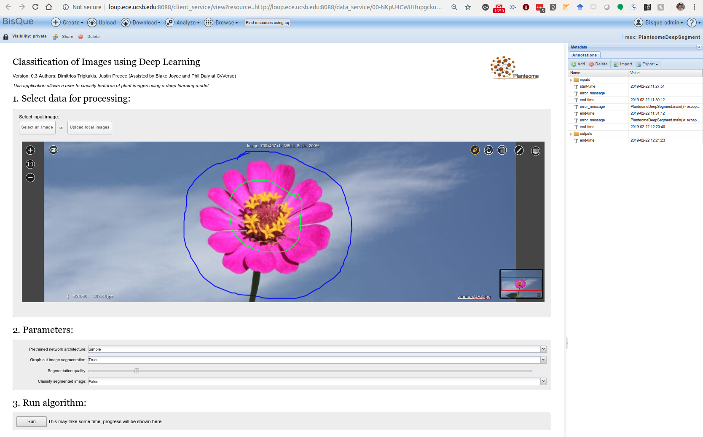
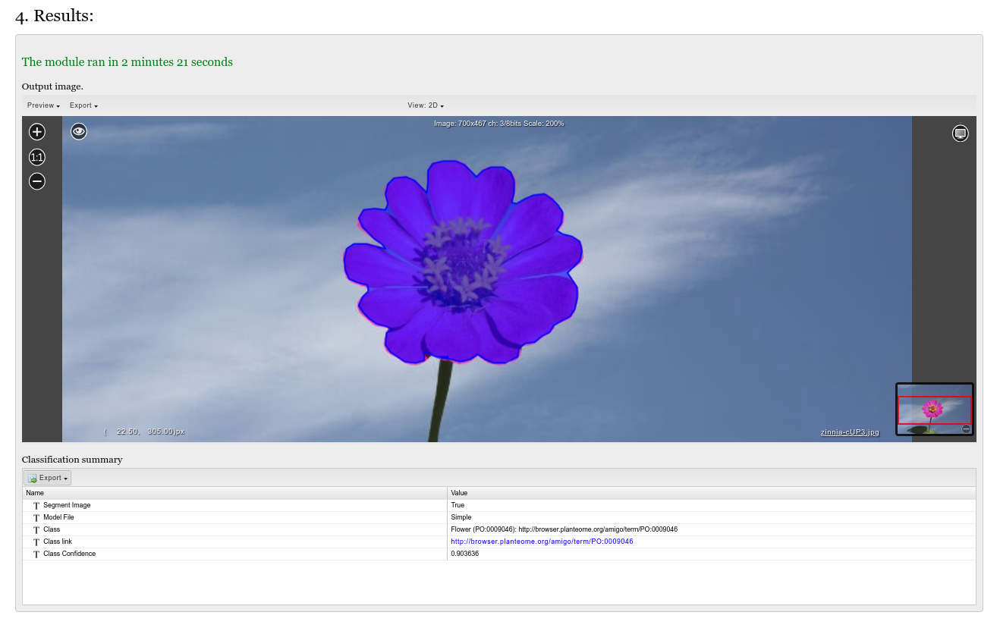

This module segments a marked object (creating a graphical object) within an input image.
Then the module will classify either the entire original image or the segment created in the first step. This uses PyTorch in order to do this deep segmentation.
This will install all the dependency in the modules requirements.txt file, build modules code, and create a docker image for running it. Based on your “docker.hub” configuration the setup will push the docker image to registry as [biodev.ece.ucsb.edu:5000/bisque_uplanteome]
Select an image to be analyzed.
The foreground/background annotation tooltip can be found on the top-right of the module image viewer. Mark the part of the image to be segmented with foreground line(s) annotation(s). Mark the image with background annotations around the object to be segmented. 
Select which deep classifier to use, whether to segment the image, the segmentation quality, and whether to classify the entire image or the segmented object instead.
Press the ‘RUN’ button. Analysis may take some time depending on the image and segmentation quality.
Results are given in visual and table formats, depending on whether the segmentation and classification functionalities respectively were enabled in the options. 
Make sure you have annotated the image and have an a mex identifier availablefor manual test/run. This can be done by, - Opening the module and select image - Annotate the image as per the directions above - Configure and run the module once - Make note of the mex URL for this run by looking at the docker_run.log in the staging folder. This will be used for replaying the test run from the modules folder.
Additional module execution information - When we annotate the image and click RUN on the module user interface - The Planteome module is created from biodev.ece.ucsb.edu:5000/bisque_uplanteome:latest
```
docker create biodev.ece.ucsb.edu:5000/bisque_uplanteome \
python PlanteomeDeepSegment.py \
http://loup.ece.ucsb.edu:8088/module_service/mex/00-NKpU4CWiHfupgckuXBNFDd \
admin:00-NKpU4CWiHfupgckuXBNFDd Simple True 3 False
```Version: 0.3 Author(s): Dimitrios Trigkakis, Justin Preece